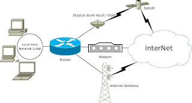
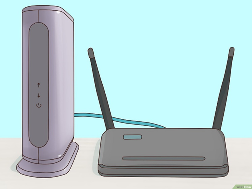
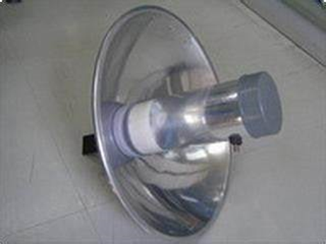
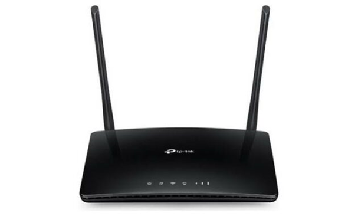
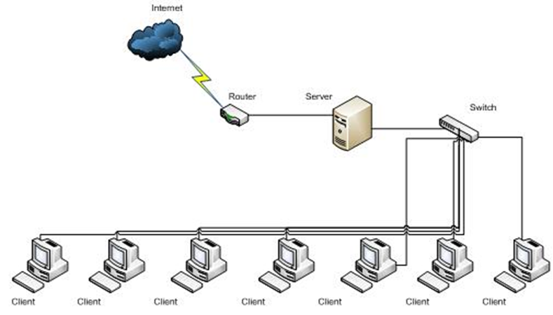

BAGAIMANA SIH CARA HARDWARE BISA MENGAKSES INTERNET?
A. Gambaran umum sambungan internet.
Secara umum ada dua (2) cara untuk dapat tersambung ke Internet, yaitu melalui sambungan perorangan dan melalui sambungan perkantoran. Dari sisi peralatan, konfigurasi sambungan tersebut adalah sebagai berikut.
1. Komputer - modem - Internet.
2. Banyak Komputer - Router - Modem - Internet.

B. Notasi kecepatan data
Kecepatan pengirim data di media komunikasi biasanya di tulis dalam jumlah bit yang dikirim per detik, atau biasa di sebut “bit per second” atau “bps”. Notasi kecepatan dalam bps sering kita dapati pada peralatan jaringan, seperti modem, Ethernet dll. Beberapa notasi yang sering digunakan,
1000 bit/detik = 1 kilo bps = 1 Kbps
1000000 bit/detik = 1 mega bps = 1 Mbps
100000000 bit/detik = 1 giga bps = 1 Gbps
A C. Modem (modulator demodulator)
Alat yang akan memasukan/ mengambil informasi digital ke sinyal pembawa. Yang bertujuan untuk membuat sinyal dapat dengan mudah di kirimkan ( di pengirin ), dan mudah di ubah jadi sinyal digital ( di penerima).

D. WAJANBOLIC E-goen dan rt/rw net
Antenna wajan bolic adalah sebuah antenna nirkabel yang terbuat dari wajan yang fungsinya adalah memperkuat sinyal. Teknik Antenna Wajanbolic e-goen merupakan pengembangan dari teknik antenna kaleng atau antenna bazoka yang pernah di kembangkan sebelumnya.

E. ROUTER
Apa itu router?
Router adalah Semacam perangkat keras pada jaringan komputer yang berfungsi untuk menghubungkan beberapa jaringan.

F. Ethernet Card
Ethernet card adalah kartu antarmuka jaringan untuk transmisi data antar komputer yang terhubung.
Apa fungsinya?
Untuk membantu pertukaran data/file menggunakan jaringan computer dan Sebagai media penghubung antara komputer dengan jaringan.
G. JARINGAN LOKAL
Jaringan lokal adalah Sebuah jaringan komputer yang luas wilayah nya kecil. Contoh jaringan LAN di lingkup sekolah, kampus, kantor, warnet, dll.

sumber : bukupaket.com
- Sarah Fajriah Rahmah